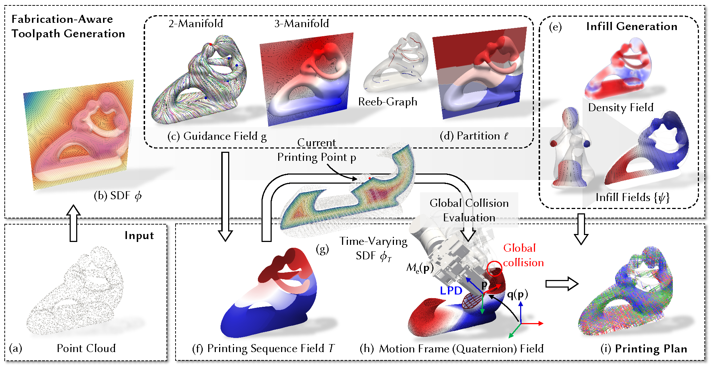

INF-3DP Framework

The computational pipeline of INF-3DP. (a) Begins with representing the printing model as a point cloud for training, (b) a SDF is computed as an implicit volumetric representation of the model. (c) Guidance fields are then optimized with fabrication-aware objectives on both the surface (2-manifold) and interior (3-manifold) domains, (d) guiding Reeb-graph-based partitions to ensure printing continuity. (e) Infill and density fields are constructed for variable density infill, (f) and the optimized printing sequence field is established. (g) By evaluating the time-varying SDF, the shape of the object at each stage of printing is approximate, enabling efficient global collision detection. (h) Differentiable quaternion field optimization is then applied for collision-free and smooth motion planning. (I) The final fabrication plan, visualized as streamlines of the motion frame field, integrates all optimized fields to ensure support-free, high-quality, and collision-free multi-axis 3DP.